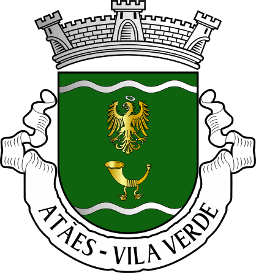

Location
Home
About Me

Atães é uma freguesia do concelho de Vila Verde, localizada na região do Minho em Portugal.
Tem uma área de aproximadamente 4,5 km² e uma população de cerca de 1.500 habitantes.
A economia local é baseada principalmente na agricultura, com destaque para a produção de vinho verde, legumes e frutas.
Atães é uma freguesia bastante rural e tranquila, com algumas casas antigas de granito e ruas estreitas de paralelo, no entanto nos
ultimos anos tem se vindo a desenvolver.
Informações
Gastronomia
Alojamento